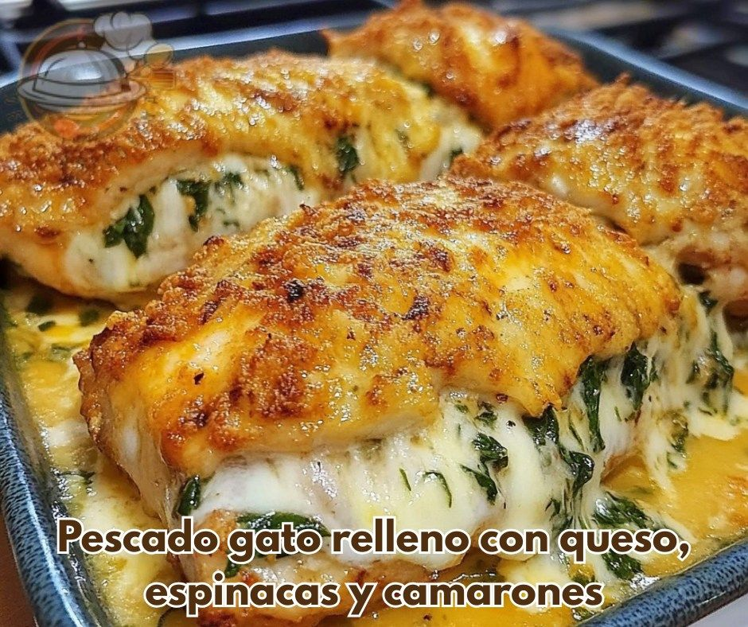

Receta con pescado

🐟 Pez gato (filetes) al horno
Ingredientes
- 3 filetes de pez gato
- 9 cebollas medianas
- Tomates medianos
- Espinacas
- 5 huevos
- 3 limones
- 6 patatas
- Sal y pimienta
Pasos
- Pela, lava y trocea las patatas en rodajas. Fríelas y ponlas sobre papel absorbente.
- Trocea las cebollas y sofríelas a fuego suave con aceite y sal hasta que estén transparentes. Reserva el aceite sobrante.
- Unta la bandeja de horno con manteca para evitar que se pegue.
- Coloca los filetes de pez gato, añade sal y frótala sobre los filetes. Reserva.
- Hornea a fuego medio durante 10-15 minutos, hasta que el pescado esté bien cocido.
Puede acompañarlas con
- Papas a la francesa
- Arepas
- Aros de cebolla
Contacto: chococoor50@gmail.com
Carrera 11 29 -04 Melgar-Tolima
cel:3222417120